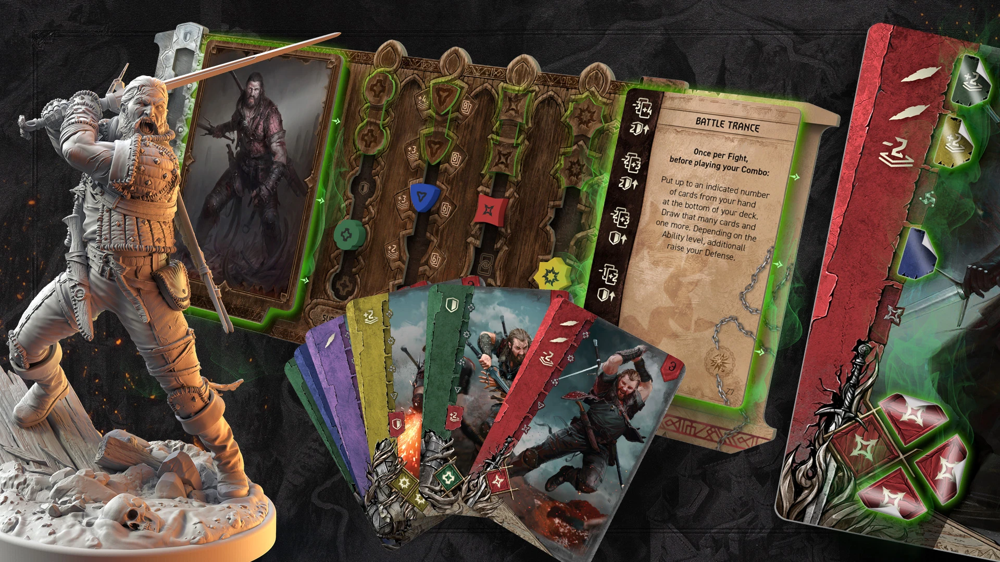

CD PROJEKT RED ve spolupráci s vydavatelem Go On Board oznámili novou kooperativní deskovou hru „The Witcher: Legacy“. Hráči mohou hrát solo nebo ve skupině 1-4 osob a prožívat příběh zasazený do světa Zaklínače, objevovat události a rozhodovat o osudech postav.
The Witcher: Legacy je navržen jako epická kampaňová hra. Hráči si staví vlastní legendu, rozvíjejí postavy, čelí nebezpečím a sbírají zdroje. Každé rozhodnutí má trvalé dopady, což přináší vysokou míru opakovatelnosti a hluboký narrativní zážitek.
Vydavatelé zdůrazňují, že hra bude obsahovat známé postavy ze světa Zaklínače, ale také nové lokace a nepřátele. Plánuje se několik scénářů, které pokryjí různé části univerza - od menších úkolů po epické konflikty.
Verze pro podporovatele nabídne exkluzivní obsah: unikátní karty, figurky, dřevěné komponenty a speciální balení. Očekává se, že limitovaná edice bude velmi žádaná mezi fanoušky i sběrateli.
Hra je plánována k vydání v roce 2026. Projekt získává podporu ze strany komunity i herních nadšenců a CD PROJEKT RED věří, že Legacy se stane jednou z klíčových deskových her inspirovaných herními univerzy.